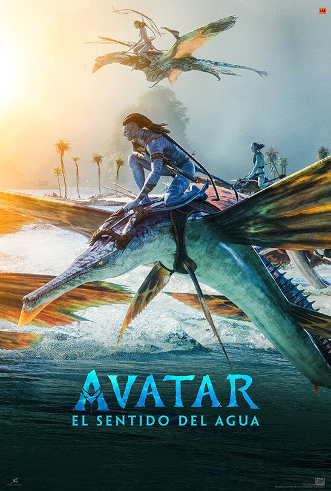

Ambientada més d'una dècada després dels esdeveniments de la primera pel·lícula, "Avatar: El sentido del agua" comença contant la història de la família Sully (Jake, Neytiri i els seus fills), els problemes que els persegueixen, la qual cosa han de fer per a mantenir-se fora de perill, les batalles que lliuren per a seguir amb vida i les tragèdies que sofreixen.